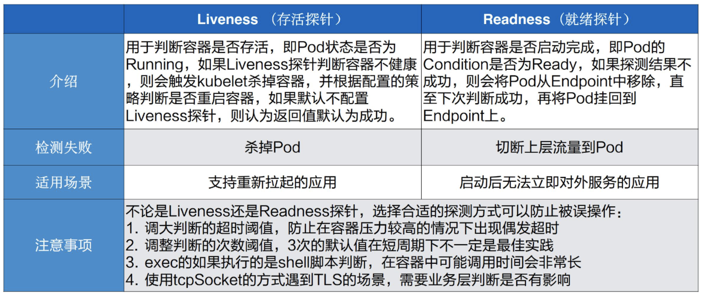
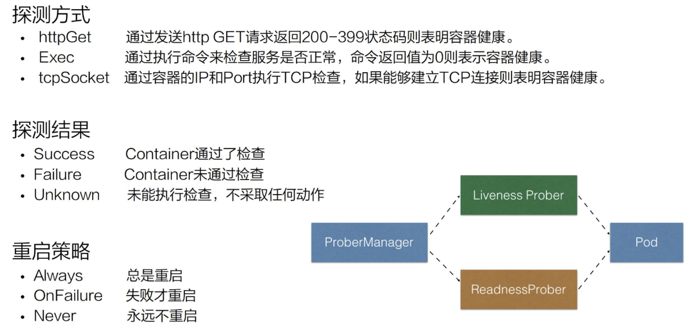
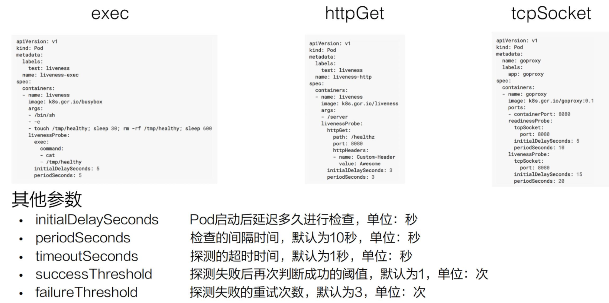
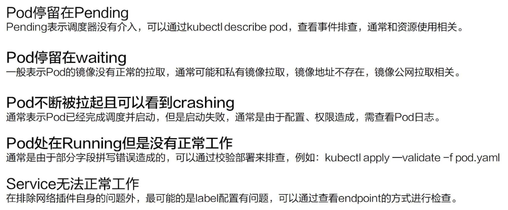
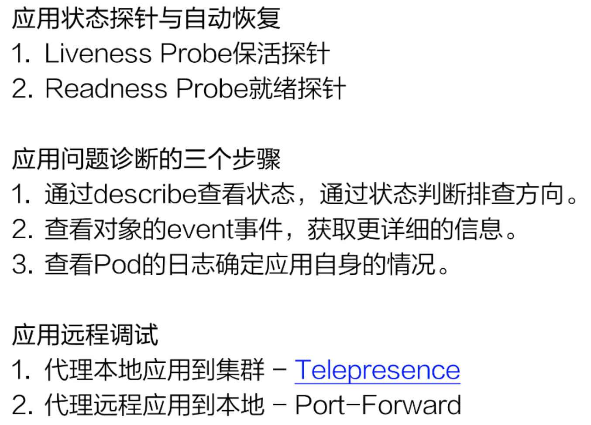

应用可观测性
目标
- 介绍一些整体需求的来源；
- 介绍在 K8s 中 Liveness 和 Readiness 的使用方式；
- 介绍在 K8s 中常见问题的诊断；
- 应用的远程调试的方式；
- 课程的总结与实践；
需求背景
来源
应用迁移到 Kubernetes 之后，要如何去保障应用的健康与稳定呢？从两个方面
- 提高应用的可观测性；
- 提供应用可恢复能力；
可观测性，可在三个方面增强：
- 首先是应用的健康状态上面，可以实时地进行观测
- 可以获取应用的资源使用情况；
- 可以拿到应用的实时日志，进行问题的诊断与分析
应用可观测性的手段（Liveness/Readiness）探针
二者比较

应用监控探测方式

应用监控探测文件描述

K8s 中常见问题的诊断
状态机制
常见应用异常
Pod 停留在 Pending
第一个就是 pending 状态，pending 表示调度器没有进行介入。此时可以通过 kubectl describe pod 来查看相应的事件，如果由于资源或者说端口占用，或者是由于 node selector 造成 pod 无法调度的时候，可以在相应的事件里面看到相应的结果，这个结果里面会表示说有多少个不满足的 node，有多少是因为 CPU 不满足，有多少是由于 node 不满足，有多少是由于 tag 打标造成的不满足。
Pod 停留在 waiting
那第二个状态就是 pod 可能会停留在 waiting 的状态，pod 的 states 处在 waiting 的时候，通常表示说这个 pod 的镜像没有正常拉取，原因可能是由于这个镜像是私有镜像，但是没有配置 Pod secret；那第二种是说可能由于这个镜像地址是不存在的，造成这个镜像拉取不下来；还有一个是说这个镜像可能是一个公网的镜像，造成镜像的拉取失败。
Pod 不断被拉取并且可以看到 crashing
第三种是 pod 不断被拉起，而且可以看到类似像 backoff。这个通常表示说 pod 已经被调度完成了，但是启动失败，那这个时候通常要关注的应该是这个应用自身的一个状态，并不是说配置是否正确、权限是否正确，此时需要查看的应该是 pod 的具体日志。
Service 无法正常的工作
最后一种就是 service 无法正常工作的时候，该怎么去判断呢？那比较常见的 service 出现问题的时候，是自己的使用上面出现了问题。因为 service 和底层的 pod 之间的关联关系是通过 selector 的方式来匹配的，也就是说 pod 上面配置了一些 label，然后 service 通过 match label 的方式和这个 pod 进行相互关联。如果这个 label 配置的有问题，可能会造成这个 service 无法找到后面的 endpoint，从而造成相应的 service 没有办法对外提供服务，那如果 service 出现异常的时候，第一个要看的是这个 service 后面是不是有一个真正的 endpoint，其次来看这个 endpoint 是否可以对外提供正常的服务
常见应用异常总结

应用远程调试
Pod 远程调试
-
进入一个正在运行的Pod
kubectl exec -it pod-name /bin/bash -
进入一个正在运行包含多容器的Pod
kubectl exec -it pod-name -c container-name /bin/bash
Servic 远程调试
实现方案，两种
-
第一: 将一个服务暴露到远程的一个集群之内，让远程集群内的一些应用来去调用本地的一个服务，这是一条反向的一个链路；
-
第二: 让这个本地服务能够去调远程的服务，那么这是一条正向的链路。
开源工具 Telepresence
Telepresence 将本地的应用代理到集群中的一个Service 上
Telepresence -swap-deployment $DEPLOYMENT_NAME
当本地开发的应用需要调用集群中的服务时: 可以使用Port-Forward将远程的应用代理到本地的端口
kubectl port-forward svc/app -n app-namespace
开源的调试工具 - kubectl-debug
总结与实践
